Bu sayfa orijinal kitap bölümünün eksiksiz Türkçe uyarlamasıdır — atlanan başlık/kod yoktur. Zor yerlerde ek ders notu ve 🧪 Şimdi deneyin kutuları vardır.
Orijinal (EN): 05.01 What Is Machine Learning? · Jupyter notebook
Makine Öğrenmesi Nedir?
Orijinal: 05.01 What Is Machine Learning?
Birkaç makine öğrenmesi yönteminin ayrıntılarına geçmeden önce makine öğrenmesinin ne olduğuna — ve ne olmadığına — bakalım. Makine öğrenmesi sıkça yapay zekanın alt alanı olarak sınıflandırılır; ancak bu sınıflandırma yanıltıcı olabilir. Makine öğrenmesi araştırması kesinlikle bu bağlamdan doğmuştur; fakat veri biliminde makine öğrenmesi yöntemlerinin uygulanmasında, makine öğrenmesini veriden model oluşturmanın bir aracı olarak düşünmek daha yararlıdır.
Bu bağlamda "öğrenme", bu modellere gözlemlenen veriye uyarlanabilen ayarlanabilir parametreler verdiğimizde devreye girer; böylece program veriden "öğreniyor" sayılabilir. Modeller daha önce görülen veriye uydurulduktan sonra, yeni gözlemlenen verinin yönlerini tahmin etmek ve anlamak için kullanılabilir. Bu tür matematiksel, modele dayalı "öğrenmenin" insan beyninin sergilediği "öğrenmeye" ne ölçüde benzediği konusundaki daha felsefi tartışmayı okuyucuya bırakıyorum.
Makine öğrenmesinde problem bağlamını anlamak, bu araçları etkili kullanmak için gereklidir; bu yüzden burada ele alacağımız yaklaşım türlerinin geniş bir sınıflandırmasıyla başlayacağız.
Makine Öğrenmesi Kategorileri
Makine öğrenmesi iki ana türe ayrılabilir: denetimli öğrenme ve denetimsiz öğrenme.
Denetimli öğrenme, verinin ölçülen öznitelikleri ile veriyle ilişkili etiketler arasındaki ilişkiyi bir şekilde modellemeyi içerir; model belirlendikten sonra yeni, bilinmeyen verilere etiket uygulamak için kullanılabilir. Bu bazen sınıflandırma ve regresyon görevlerine ayrılır: sınıflandırmada etiketler ayrık kategorilerdir; regresyonda süreklidir. Sonraki bölümde her iki denetimli öğrenme türüne de örnekler göreceksiniz.
Denetimsiz öğrenme, herhangi bir etikete başvurmadan bir veri kümesinin özniteliklerini modellemeyi içerir. Bu modeller kümeleme ve boyut indirgeme gibi görevleri kapsar. Kümeleme algoritmaları verinin belirgin gruplarını tanımlar; boyut indirgeme algoritmaları verinin daha özlü temsillerini arar. Denetimsiz öğrenmenin her iki türüne de örnekler göreceksiniz.
Buna ek olarak, denetimli ile denetimsiz arasında kalan yarı denetimli öğrenme yöntemleri vardır; yalnızca eksik etiketler mevcut olduğunda sıkça yararlıdır.
Makine Öğrenmesi Uygulamalarına Nitel Örnekler
Bu fikirleri somutlaştırmak için bir makine öğrenmesi görevinin birkaç çok basit örneğine bakalım. Bu örnekler, kitabın bu bölümünde inceleyeceğimiz makine öğrenmesi görev türlerine sezgisel, nicel olmayan bir genel bakış vermek içindir. Sonraki bölümlerde belirli modellere ve kullanımlarına daha derin ineceğiz. Daha teknik yönlerin önizlemesi için aşağıdaki şekilleri üreten Python kaynağını çevrimiçi ek bölümde bulabilirsiniz.
Sınıflandırma: Ayrık Etiketleri Tahmin Etmek
Önce etiketli noktalar verildiğinde bunları kullanarak etiketsiz noktaları sınıflandırmak istediğimiz basit bir sınıflandırma görevine bakalım.
Aşağıdaki şekilde gösterilen veriye sahip olduğumuzu düşünün:
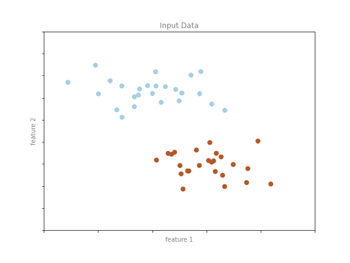
Bu veri iki boyutludur: her nokta için düzlemdeki (x,y) konumlarıyla temsil edilen iki öznitelik vardır. Ayrıca her nokta için iki sınıf etiketinden biri vardır; burada noktaların renkleriyle gösterilir. Bu öznitelikler ve etiketlerden, yeni bir noktanın "mavi" mi "kırmızı" mı etiketleneceğine karar verecek bir model oluşturmak isteriz.
Böyle bir sınıflandırma görevi için birçok model mümkündür; çok basit biriyle başlayacağız. İki grubun düzlemde aralarına çizilen düz bir doğruyla ayrılabileceğini, doğrunun her iki tarafındaki noktaların aynı gruba düştüğünü varsayacağız. Burada model, "düz bir doğru sınıfları ayırır" ifadesinin nicel bir sürümüdür; model parametreleri ise bu doğrunun verimiz için konum ve yönelimini tanımlayan sayılardır. Bu parametrelerin en uygun değerleri veriden öğrenilir (makine öğrenmesindeki "öğrenme" budur); buna genelde modeli eğitmek denir.
Aşağıdaki şekil, eğitilmiş modelin bu veri için nasıl göründüğünü gösterir:
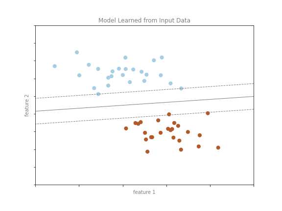
Model eğitildikten sonra yeni, etiketlenmemiş veriye genellenebilir. Başka bir deyişle, yeni bir veri kümesi alıp bu doğruyu çizebilir ve modele göre yeni noktalara etiket atayabiliriz (aşağıdaki şekil). Bu aşamaya genelde tahmin denir.
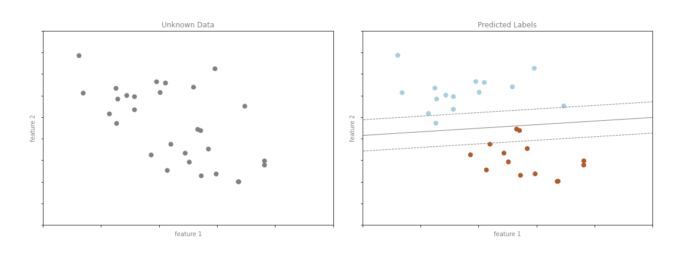
Bu, makine öğrenmesinde "sınıflandırma" görevinin temel fikridir; verinin ayrık sınıf etiketleri olduğunu belirtir. İlk bakışta bu önemsiz görünebilir: veriye bakıp böyle bir ayırıcı doğru çizmek kolaydır. Makine öğrenmesi yaklaşımının yararı ise çok daha büyük ve çok daha fazla boyutlu veri kümelerine genellenebilmesidir.
Örneğin bu, e-posta için otomatik spam tespitine benzer. Burada şu öznitelik ve etiketleri kullanabiliriz:
- öznitelik 1, öznitelik 2, … → önemli kelime veya ifadelerin normalize sayıları ("Viagra", "Extended warranty" vb.)
- etiket → "spam" veya "spam değil"
Eğitim kümesi için etiketler küçük bir temsil örneğinin tek tek incelenmesiyle belirlenebilir; kalan e-postalar için etiket modelle belirlenir. Yeterince iyi oluşturulmuş özniteliklere (genelde binlerce veya milyonlarca kelime/ifade) sahip uygun eğitilmiş bir sınıflandırma algoritması çok etkili olabilir. Metin tabanlı böyle bir sınıflandırma örneğini Derinlemesine: Naive Bayes Sınıflandırması bölümünde göreceğiz.
Daha ayrıntılı ele alacağımız önemli sınıflandırma algoritmaları arasında Gauss naive Bayes (Derinlemesine: Naive Bayes), destek vektör makineleri (Derinlemesine: SVM) ve rastgele orman sınıflandırması (Derinlemesine: Karar Ağaçları ve Rastgele Ormanlar) vardır.
Regresyon: Sürekli Etiketleri Tahmin Etmek
Sınıflandırma algoritmasının ayrık etiketlerinin aksine, etiketlerin sürekli nicelikler olduğu basit bir regresyon görevine bakalım.
Aşağıdaki şekildeki veriyi düşünün; her noktanın sürekli bir etiketi vardır:
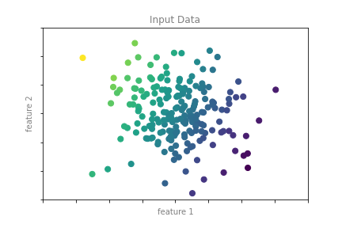
Sınıflandırma örneğinde olduğu gibi iki boyutlu verimiz var: her veri noktasını tanımlayan iki öznitelik. Her noktanın rengi o nokta için sürekli etiketi temsil eder.
Bu tür veri için birçok regresyon modeli kullanılabilir; burada noktaları tahmin etmek için basit doğrusal regresyon kullanacağız. Bu basit model, etiketi üçüncü bir uzamsal boyut olarak ele alırsak veriye bir düzlem sığdırabileceğimizi varsayar. Bu, iki koordinatlı veriye doğru sığdırma probleminin daha üst düzey bir genellemesidir.
Bu kurulumu aşağıdaki şekilde görselleştirebiliriz:
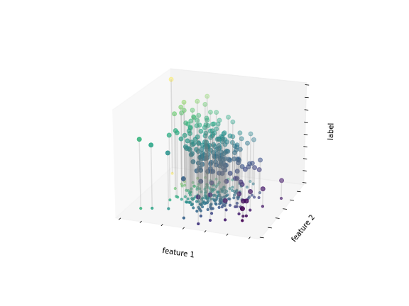
öznitelik 1–öznitelik 2 düzleminin iki boyutlu çizimdekiyle aynı olduğuna dikkat edin; burada etiketleri hem renkle hem üç boyutlu eksen konumuyla temsil ettik. Bu bakış açısından, bu üç boyutlu veriye bir düzlem sığdırmak herhangi bir girdi parametre seti için beklenen etiketi tahmin etmemize olanak tanır gibi görünür. İki boyutlu izdüşüme döndüğümüzde böyle bir düzlem sığdırdığımızda aşağıdaki sonucu elde ederiz:
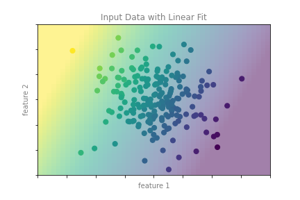
Bu uyum düzlemi yeni noktalar için etiket tahmin etmemiz için gerekeni verir. Görsel olarak sonuçlar aşağıdaki şekildedir:
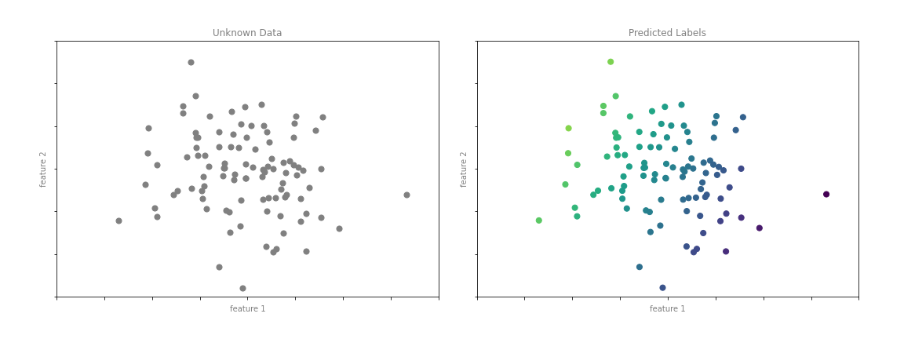
Sınıflandırma örneğinde olduğu gibi, az sayıda boyutta bu görev önemsiz görünebilir. Ancak bu yöntemlerin gücü, çok sayıda özniteliği olan veriye doğrudan uygulanıp değerlendirilebilmesidir.
Örneğin bu, teleskopla gözlemlenen galaksilere uzaklık hesaplamaya benzer:
- öznitelik 1, öznitelik 2, … → her galaksinin bir veya birkaç dalga boyundaki parlaklığı
- etiket → galaksinin uzaklığı veya kırmızıya kayması
Küçük bir galaksi alt kümesinin uzaklıkları bağımsız (genelde daha pahalı/karmaşık) gözlemlerle belirlenebilir. Kalan galaksilerin uzaklıkları uygun bir regresyon modeliyle tahmin edilebilir; tüm küme için pahalı gözlemi tekrarlamaya gerek kalmaz. Astronomi çevrelerinde buna "fotometrik kırmızıya kayma" problemi denir.
Ele alacağımız önemli regresyon algoritmaları arasında doğrusal regresyon (Derinlemesine: Doğrusal Regresyon), destek vektör makineleri (Derinlemesine: SVM) ve rastgele orman regresyonu (Derinlemesine: Karar Ağaçları ve Rastgele Ormanlar) vardır.
Kümeleme: Etiketsiz Veride Etiket Çıkarsama
Az önce gördüğümüz sınıflandırma ve regresyon örnekleri, yeni veri için etiket tahmin edecek model oluşturmaya çalışan denetimli öğrenme algoritmalarıdır. Denetimsiz öğrenme, bilinen etiketlere başvurmadan veriyi tanımlayan modelleri içerir.
Denetimsiz öğrenmenin yaygın bir durumu "kümeleme"dir; veri otomatik olarak belirli sayıda ayrık gruba atanır. Örneğin aşağıdaki şekildeki gibi iki boyutlu verimiz olabilir:
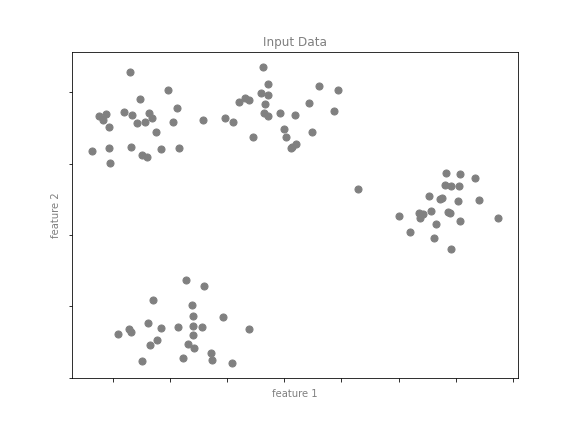
Gözle her noktanın belirgin bir grubun parçası olduğu açıktır. Bu girdiyle bir kümeleme modeli, verinin iç yapısını kullanarak hangi noktaların ilişkili olduğunu belirler. Çok hızlı ve sezgisel k-ortalama algoritmasıyla (Derinlemesine: K-Means Kümeleme) aşağıdaki kümeleri buluruz:
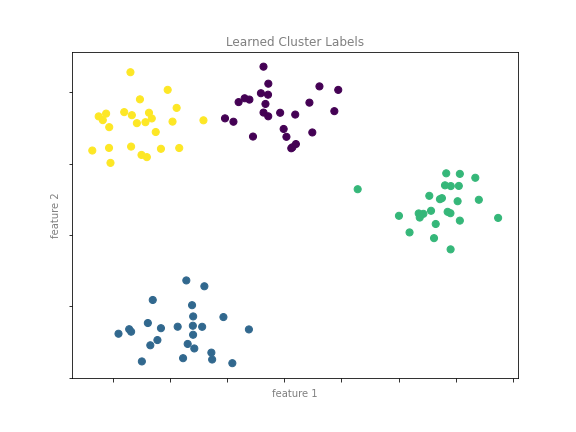
k-ortalama, k küme merkezinden oluşan bir model sığdırır; en uygun merkezler, her noktanın atandığı merkeze uzaklığını minimize edenler varsayılır. İki boyutta bu yine basit görünebilir; veri büyüdükçe ve karmaşıklaştıkça kümeleme algoritmaları veri kümesinden yararlı bilgi çıkarmaya devam eder.
k-ortalama algoritmasını Derinlemesine: K-Means Kümeleme bölümünde daha derin ele alacağız. Diğer önemli kümeleme algoritmaları arasında Gauss karışım modelleri (Derinlemesine: Gauss Karışımları) ve spektral kümeleme (Scikit-Learn kümeleme dokümantasyonu) vardır.
Boyut İndirgeme: Etiketsiz Verinin Yapısını Çıkarsama
Boyut indirgeme, etiketlerin veya diğer bilgilerin veri kümesinin yapısından çıkarıldığı denetimsiz bir algoritma örneğidir. Önceki örneklerden biraz daha soyuttur; genelde veri kümesinin ilgili niteliklerini koruyan düşük boyutlu bir temsil çıkarmayı hedefler. Farklı boyut indirgeme yöntemleri bu nitelikleri farklı ölçer (Derinlemesine: Manifold Öğrenme).
Örnek olarak aşağıdaki veriyi düşünün:
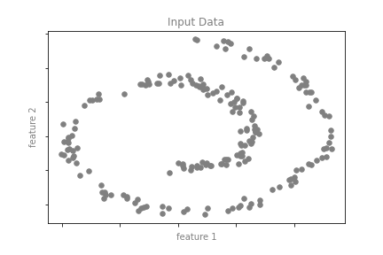
Görsel olarak bu veride yapı vardır: iki boyutlu uzayda spiral biçiminde düzenlenmiş tek boyutlu bir çizgiden çekilmiştir. Bir bakıma veri aslında "içsel" olarak yalnızca tek boyutludur; bu tek boyutlu veri iki boyutlu uzaya gömülmüştür. Uygun bir boyut indirgeme modeli bu doğrusal olmayan gömülü yapıya duyarlı olur ve daha düşük boyutlu temsili algılayabilir.
Aşağıdaki şekil tam bunu yapan bir manifold öğrenme algoritması olan Isomap'ın sonuçlarını gösterir.
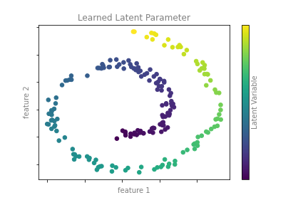
Renklerin (çıkarılan tek boyutlu gizli değişkeni temsil eden) spiral boyunca düzgün değiştiğine dikkat edin; algoritmanın gözle gördüğümüz yapıyı algıladığını gösterir. Önceki örneklerde olduğu gibi, boyut indirgeme algoritmalarının gücü daha yüksek boyutlarda belirginleşir. Örneğin 100 veya 1000 özniteliği olan bir veri kümesindeki önemli ilişkileri görselleştirmek isteyebiliriz. 1000 boyutlu veriyi görselleştirmek zordur; veriyi 2 veya 3 boyuta indirgeyerek yönetilebilir kılabiliriz.
Ele alacağımız önemli boyut indirgeme algoritmaları arasında temel bileşen analizi (Derinlemesine: PCA) ve Isomap ile yerel doğrusal gömme dahil çeşitli manifold öğrenme algoritmaları (Derinlemesine: Manifold Öğrenme) vardır.
Özet
Burada temel makine öğrenmesi yaklaşım türlerinin birkaç basit örneğini gördük. Kuşkusuz göz ardı ettiğimiz önemli pratik ayrıntılar vardır; ancak bu bölüm, makine öğrenmesi yaklaşımlarının hangi problem türlerini çözebileceğine dair temel bir fikir vermek için tasarlandı.
Kısaca şunları gördük:
- Denetimli öğrenme: Etiketli eğitim verisine dayanarak etiket tahmin eden modeller
- Sınıflandırma: Etiketleri iki veya daha fazla ayrık kategori olarak tahmin eden modeller
- Regresyon: Sürekli etiket tahmin eden modeller
- Denetimsiz öğrenme: Etiketsiz veride yapı tanımlayan modeller
- Kümeleme: Veride belirgin grupları tespit eden modeller
- Boyut indirgeme: Yüksek boyutlu veride daha düşük boyutlu yapıyı bulan modeller
Sonraki bölümlerde bu kategoriler içinde çok daha derine inecek ve bu kavramların nerede yararlı olduğuna dair daha ilginç örnekler göreceğiz.
Önceki tartışmadaki tüm şekiller gerçek makine öğrenmesi hesaplarına dayanır; arkalarındaki kod Ek: Şekil Kodu bölümünde bulunur.
Denetimli öğrenmede modelinize hem X (öznitelikler) hem y (etiket) verirsiniz; denetimsiz öğrenmede yalnızca X vardır. Bölüm 5.2'de her ikisi için de Scikit-Learn'de aynı fit / predict / transform kalıbını göreceksiniz.
Aşağıda rastgele 2D noktalar üretin; gerçek kümeleme algoritmalarını Bölüm 5.11'de göreceksiniz:
import numpy as np
rng = np.random.RandomState(0)
A = rng.randn(20, 2) + [2, 2]
B = rng.randn(20, 2) + [-2, -2]
X = np.vstack([A, B])
print("X.shape =", X.shape)